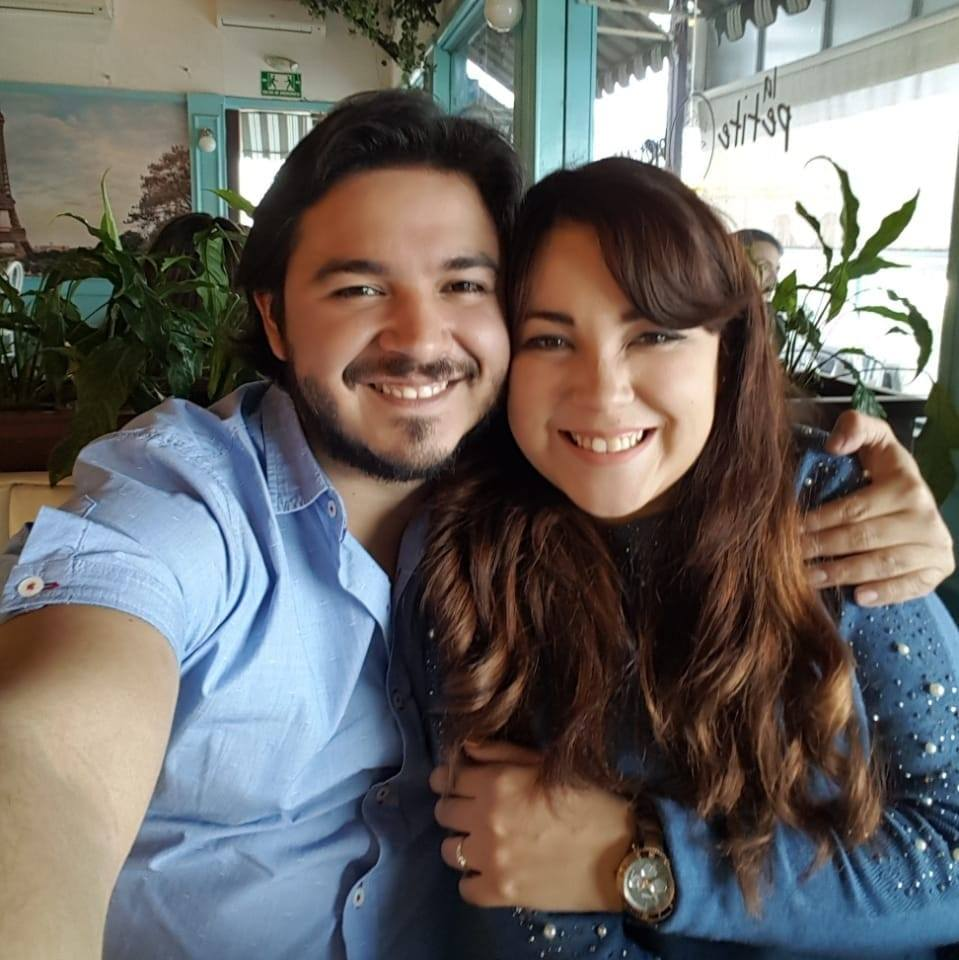

About me

Hi and welcome to my website! I'm Jorge Martinez, 26 years old, born and raised in Monterrey.
I graduated a few years ago from Tecnologico de Monterrey, holding a Bachelor in Mechatronics Engineering. After graduation I started working for the next 2 years in different companies such as CNC Industrial and Softel. A year and a half ago I started working full-time on my own snack business, Cornell Snack Lab, and it's been growing steadily since its inception
Now I'm looking once again to take on the path of programming I since left behind, this time focusing on web development and game development. I know uncharted territories lie ahead, but I'm willing to put all my effort and energies to succeed in these unknown lands. Practice and experience can only come after struggling through countless obstacles, so let them come!